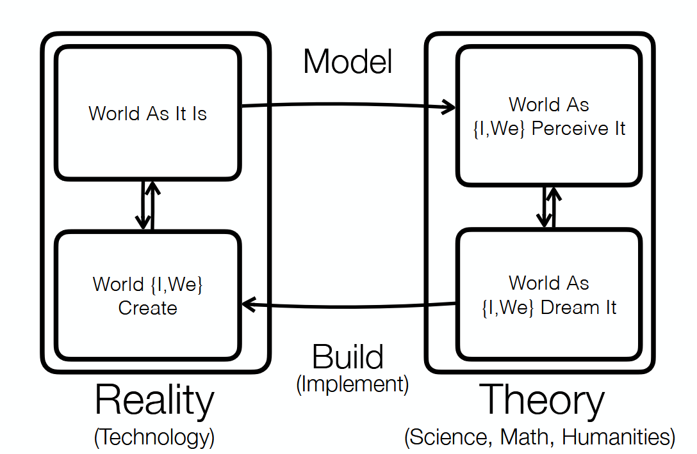

Introduction
The purpose of this portfolio is to present my engineering work up to date with respect to (with regard to??) my current position on engineering design, and to examine the effectiveness of Praxis design concepts, tools, models, and frameworks (CTMFs) I have used.
In my first year of Engineering Science, I realized that all stages of engineering design requires a balance between complexity and simplicity; moreover, complexity requires a buildup of simple steps. This realization was formed by my experiences with Praxis I, CIV 102, Praxis II, and design team projects. The CTMFs that I have used also helped form my current position, and I will document then here for future reference.
In my portfolio:
- I will present how my position changed over the semester.
- Then, I will show my Praxis 1, Bridge, Praxis 2, and design team projects, along with CTMFs used, to demonstrate how they led to my current position.
- Lastly, I will conclude by explaining how my form of presentation for this portfolio reflects my current position, discussing the engineering design skills I'd like to develop further, and listing my references.
Hoover Dam Model -- the Model that Frames My Position

The Hoover Dam Model represents the relationship